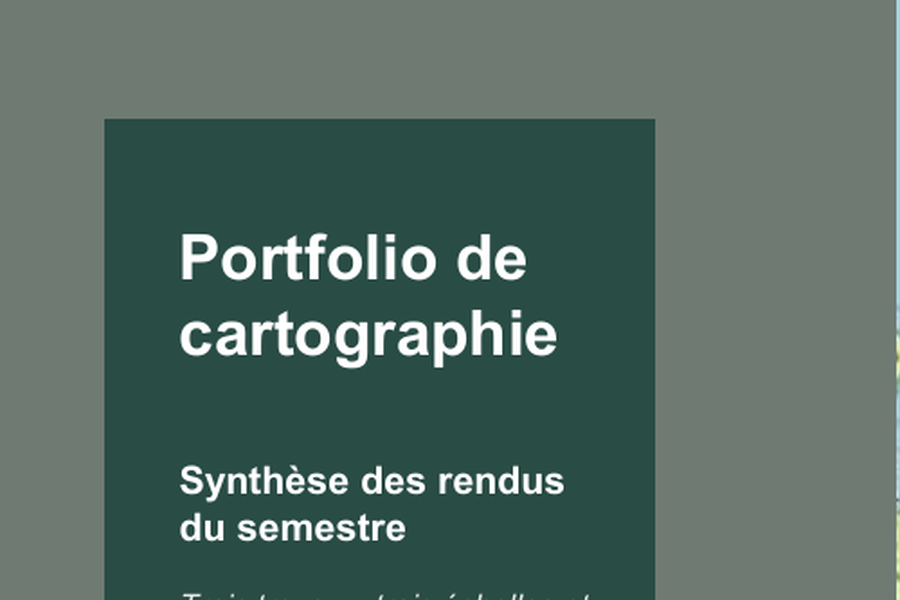
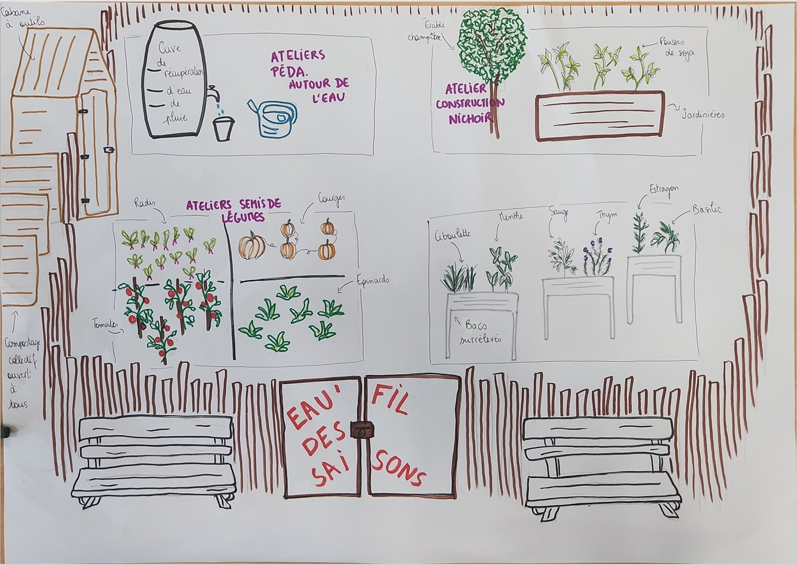

Ouvrir le benchmark et la stratégie CCM
Ouvrir le benchmark et la stratégie CCM
Stage en aménagement
Réaménagement des ZAE de la CCM
Étude des zones d’activités économiques de la Communauté de communes de Montesquieu : visites, lecture des PLU et OAP, comparaison de projets et propositions d’aménagement.
ZAEPLU/OAPbenchmark

Ouvrir le portfolio complet
Cartographie universitaire
Portfolio de cartographie universitaire
Recueil de cartes réalisées pendant le BUT, avec les choix de représentation et la méthode de travail.
carteslégendesméthode

Ouvrir le dossier de candidature
Rendu de cours collectif
Jardin de l’Ars · Eau’Fil des Saisons
Dossier réalisé à cinq dans le cadre d’un cours. Il s’agit d’une simulation de projet de jardin partagé ; les personnes et institutions citées ne sont pas impliquées.
jardin partagégroupe de 5simulation